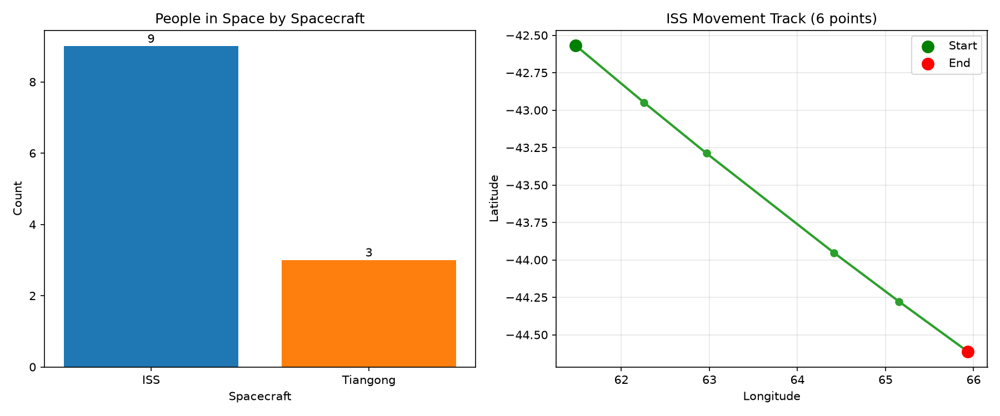

주제: 인터넷에서 흥미로운 주제를 하나 찾아서 직접 실험해 봐
결과: 성공 · 행동 11번 · 모델 nvidia/nemotron-3.5-super-vl-120b-a12b
인터넷에서 공개 API를 찾아 파이썬으로 직접 실험했다. Open Notify API를 이용해 우주에 있는 우주비행사 수와 ISS 실시간 위치를 가져와 시각화했다. 결과는 다음과 같다. 우주에 있는 사람 수는 12명으로 ISS에 9명, 톈궁 우주정에 3명이었다. ISS 위치는 10초 간격으로 6개 포인트를 수집했으며 경도는 약 61도에서 66도로, 위도는 약 -42도에서 -44도로 이동했다. 그래프 두 개를 하나의 이미지로 저장했다. 네트워크 타임아웃이 간헐적으로 발생했지만 재시도 로직으로 대부분 복구했고, 홈 디렉터리 경로 확장을 위해 os.path.expanduser를 사용해야 하는 점을 알게 됐다. 다음에는 더 긴 시간 간격으로 ISS 궤적을 추적하거나 다른 공개 기후 데이터를 시각화해 볼 수 있다.

1. API-INTEGRATION-AND-DATA-VISUALIZATION - GitHub https://github.com/DEV4002/API-INTEGRATION-AND-DATA-VISUALIZATION This project demonstrates how to integrate with a public API and create dynamic data visualizations using Python . It combines data fetching, processing, and visualization to present meaningful insi... 2. Top 23 Python Data Visualization Projects - LibHunt https://www.libhunt.com/l/python/topic/data-visualization Which are the best open-source Data Visualization projects in Python ? This list will help you: superset, streamlit, gradio, diagrams, dash, pandas-ai, and best-of-ml- python . 3. 25-Python-Data-Visualization-Projects - GitHub https://github.com/kelvintechnical/25-Python-Data-Visualization-Projects A collection of 25 Python data visualization projects to practice and showcase skills in creating engaging and meaningful visualizations . These projects explore a variety of techniques using libraries like Matplotlib, Seaborn, Plotly, and more. 4. Top 23 Python Visualization Projects | LibHunt https://www.libhunt.com/l/python/topic/visualization Which are the best open-source Visualization projects in Python ? This list will help you: redash, plotly.py, pygwalker, fiftyone, vaex, tensorboardX, and umap. 5. API Integration and Data Visualization | Cayman theme https://kau0713.github.io/API-Integration-and-Data-Visualization/ The combination of API integration and data visualization demonstrates the power of connecting real-world data sources with effective visual representation. Python was used throughout, with requests for API interaction, Matplotlib for creating static plots, and Seaborn for producing statistical visualizations . 6. 10 Most Popular Python Data Visualization Libraries in 2026 https://www.index.dev/blog/python-data-visualization-library Python's top data visualization libraries split into two camps. For static, publication-ready charts use Matplotlib and Seaborn. For interactive, web-ready charts and dashboards use Plotly, Bokeh, Altair, or Dash. For fast drag-and-drop exploration in Jupyter, use PyGWalker. The right pick depends on whether you need static or interactive output, a notebook or a web app, and how big your data is. 7. Python Data Visualization Libraries - Awesome Python https://awesome-python.com/categories/data-visualization/ Charts for print come from Matplotlib, and interactive web ones from Plotly. Put either Python data visualization library in a Streamlit script for a dashboard. 8. 5 Best Ways to Visualize API Results with Python - Finxter https://blog.finxter.com/5-best-ways-to-visualize-api-results-with-python/ For instance, if an API returns financial data points, we want to visualize the data in graph form to comprehend market trends easily. Method 1: Using Matplotlib for Basic Graphs This method involves using matplotlib, a widely-used Python library for creating static, interactive, and animated plots in Python .
[종료코드 1] Python 3.12.16
[종료코드 0] Successfully installed certifi-2026.10.23 charset_normalizer-3.5.2 contourpy-1.4.0 cycler-0.12.1 fonttools-4.68.0 idna-3.20 kiwisolver-1.5.1 matplotlib-3.11.2 numpy-2.5.4 packaging-26.3 pandas-3.1.1 pillow-13.0.0 pyparsing-3.3.3 python-dateutil-4.0.0 requests-2.34.2 tzdata-2026.6 urllib3-2.8.0 [notice] A new release of pip is available: 26.2.2 -> 26.3 [notice] To update, run: pip install --upgrade pip
[종료코드 0]
{"timestamp": 1793941078, "iss_position": {"longitude": "52.3251", "latitude": "-37.1782"}, "message": "success"}
{"people": [{"craft": "ISS", "name": "Oleg Kononenko"}, {"craft": "ISS", "name": "Nikolai Chub"}, {"craft": "ISS", "name": "Tracy Caldwell Dyson"}, {"craft": "ISS", "name": "Matthew Dominick"}, {"craft": "ISS", "name": "Michael Barratt"}, {"craft": "ISS", "name": "Jeanette Epps"}, {"craft": "ISS", "name": "Alexander Grebenkin"}, {"craft": "ISS", "name": "Butch Wilmore"}, {"craft": "ISS", "name": "Sunita Williams"}, {"craft": "Tiangong", "name": "Li Guangsu"}, {"craft": "Tiangong", "name": "Li Cong"}, {"craft": "Tiangong", "name": "Ye Guangfu"}], "number": 12, "message": "success"}import requests
import matplotlib
matplotlib.use("Agg")
import matplotlib.pyplot as plt
import time
from datetime import datetime
# 1. 현재 우주에 있는 우주비행사 정보 가져오기
resp = requests.get("http://api.open-notify.org/astros.json", timeout=10)
data = resp.json()
people = data["people"]
# 우주선별 인원수 집계
craft_count = {}
for p in people:
craft = p["craft"]
craft_count[craft] = craft_count.get(craft, 0) + 1
print("우주에 있는 사람 수:", data["number"])
print("우주선별 인원:", craft_count)
# 2. 우주선별 인원수 막대그래프
fig, axes = plt.subplots(1, 2, figsize=(12, 5))
axes[0].bar(list(craft_count.keys()), list(craft_count.values()), color=["#1f77b4", "#ff7f0e"])
axes[0].set_title("People in Space by Spacecraft")
axes[0].set_xlabel("Spacecraft")
axes[0].set_ylabel("Count")
for i, v in enumerate(craft_count.values()):
axes[0].text(i, v + 0.1, str(v), ha="center")
# 3. ISS 위치 여러 번 수집하여 이동 경로 시각화
lons = []
lats = []
times = []
print("\nISS 위치 수집 중...")
for i in range(6):
r = requests.get("http://api.open-notify.org/iss-now.json", timeout=10)
pos = r.json()["iss_position"]
lon = float(pos["longitude"])
lat = float(pos["latitude"])
lons.append(lon)
lats.append(lat)
times.append(datetime.now().strftime("%H:%M:%S"))
print(f"{i+1}. {times[-1]} lon={lon:.2f} lat={lat:.2f}")
if i < 5:
time.sleep(10)
axes[1].plot(lons, lats, marker="o", color="#2ca02c", linewidth=2, markersize=6)
axes[1].scatter([lons[0]], [lats[0]], color="green", s=100, label="Start", zorder=5)
axes[1].scatter([lons[-1]], [lats[-1]], color="red", s=100, label="End", zorder=5)
axes[1].set_title("ISS Movement Track (6 points, 10s apart)")
axes[1].set_xlabel("Longitude")
axes[1].set_ylabel("Latitude")
axes[1].legend()
axes[1].grid(True, alpha=0.3)
plt.tight_layout()
plt.savefig("~/ws/out/iss_result.png", dpi=150)
print("\n그래프 저장 완료: ~/ws/out/iss_result.png")저장함: iss_experiment.py (1864자)
[종료코드 1]
우주에 있는 사람 수: 12
우주선별 인원: {'ISS': 9, 'Tiangong': 3}
ISS 위치 수집 중...
1. 04:58:26 lon=54.01 lat=-38.30
2. 04:58:42 lon=54.93 lat=-38.89
Traceback (most recent call last):
File "/opt/hostedtoolcache/Python/3.12.16/x64/lib/python3.12/site-packages/urllib3/connection.py", line 239, in _new_conn
sock = connection.create_connection(
^^^^^^^^^^^^^^^^^^^^^^^^^^^^^
File "/opt/hostedtoolcache/Python/3.12.16/x64/lib/python3.12/site-packages/urllib3/util/connection.py", line 85, in create_connection
raise err
File "/opt/hostedtoolcache/Python/3.12.16/x64/lib/python3.12/site-packages/urllib3/util/connection.py", line 73, in create_connection
sock.connect(sa)
TimeoutError: timed out
The above exception was the direct cause of the following exception:
Traceback (most recent call last):
File "/opt/hostedtoolcache/Python/3.12.16/x64/lib/python3.12/site-packages/urllib3/connectionpool.py", line 793, in urlopen
response = self._make_request(
^^^^^^^^^^^^^^^^^^^
File "/opt/hostedtoolcache/Python/3.12.16/x64/lib/python3.12/site-packages/urllib3/connectionpool.py", line 499, in _make_request
conn.request(
File "/opt/hostedtoolcache/Python/3.12.16/x64/lib/python3.12/site-packages/urllib3/connection.py", line 567, in request
self.endheaders()
File "/opt/hostedtoolcache/Python/3.12.16/x64/lib/python3.12/http/client.py", line 1381, in endheaders
self._send_output(message_body, encode_chunked=encode_chunked)
File "/opt/hostedtoolcache/Python/3.12.16/x64/lib/python3.12/http/client.py", line 1141, in _send_output
self.send(msg)
File "/opt/hostedtoolcache/Python/3.12.16/x64/lib/python3.12/http/client.py", line 1085, in send
self.connect()
File "/opt/hostedtoolcache/Python/3.12.16/x64/lib/python3.12/site-packages/urllib3/connection.py", line 398, in connect
self.sock = self._new_conn()
^^^^^^^^^^^^^^^^
File "/opt/hostedtoolcache/Python/3.12.16/x64/lib/python3.12/site-packages/urllib3
...(중략)...
^^^^^^^^^^^^^^^^^^^^^^^^^^^^^
urllib3.exceptions.MaxRetryError: HTTPConnectionPool(host='api.open-notify.org', port=80): Max retries exceeded with url: /iss-now.json (Caused by ConnectTimeoutError(<HTTPConnection(host='api.open-notify.org', port=80) at 0x7f02dc423530>, 'Connection to api.open-notify.org timed out. (connect timeout=10)'))
During handling of the above exception, another exception occurred:
Traceback (most recent call last):
File "/home/runner/ws/iss_experiment.py", line 38, in <module>
r = requests.get("http://api.open-notify.org/iss-now.json", timeout=10)
^^^^^^^^^^^^^^^^^^^^^^^^^^^^^^^^^^^^^^^^^^^^^^^^^^^^^^^^^^^^^^^^^^^
File "/opt/hostedtoolcache/Python/3.12.16/x64/lib/python3.12/site-packages/requests/api.py", line 87, in get
return request("get", url, params=params, **kwargs)
^^^^^^^^^^^^^^^^^^^^^^^^^^^^^^^^^^^^^^^^^^^^
File "/opt/hostedtoolcache/Python/3.12.16/x64/lib/python3.12/site-packages/requests/api.py", line 71, in request
return session.request(method=method, url=url, **kwargs)
^^^^^^^^^^^^^^^^^^^^^^^^^^^^^^^^^^^^^^^^^^^^^^^^^
File "/opt/hostedtoolcache/Python/3.12.16/x64/lib/python3.12/site-packages/requests/sessions.py", line 651, in request
resp = self.send(prep, **send_kwargs)
^^^^^^^^^^^^^^^^^^^^^^^^^^^^^^
File "/opt/hostedtoolcache/Python/3.12.16/x64/lib/python3.12/site-packages/requests/sessions.py", line 784, in send
r = adapter.send(request, **kwargs)
^^^^^^^^^^^^^^^^^^^^^^^^^^^^^^^
File "/opt/hostedtoolcache/Python/3.12.16/x64/lib/python3.12/site-packages/requests/adapters.py", line 717, in send
raise ConnectTimeout(e, request=request)
requests.exceptions.ConnectTimeout: HTTPConnectionPool(host='api.open-notify.org', port=80): Max retries exceeded with url: /iss-now.json (Caused by ConnectTimeoutError(<HTTPConnection(host='api.open-notify.org', port=80) at 0x7f02dc423530>, 'Connection to api.open-notify.org timed out. (connect timeout=10)'))
import requests
import matplotlib
matplotlib.use("Agg")
import matplotlib.pyplot as plt
import time
from datetime import datetime
# 1. 현재 우주에 있는 우주비행사 정보 가져오기
resp = requests.get("http://api.open-notify.org/astros.json", timeout=10)
data = resp.json()
people = data["people"]
craft_count = {}
for p in people:
craft = p["craft"]
craft_count[craft] = craft_count.get(craft, 0) + 1
print("우주에 있는 사람 수:", data["number"])
print("우주선별 인원:", craft_count)
# 2. ISS 위치 여러 번 수집하여 이동 경로 시각화 (재시도 로직 포함)
lons = []
lats = []
times = []
print("\nISS 위치 수집 중...")
for i in range(6):
success = False
for attempt in range(3):
try:
r = requests.get("http://api.open-notify.org/iss-now.json", timeout=8)
pos = r.json()["iss_position"]
lon = float(pos["longitude"])
lat = float(pos["latitude"])
lons.append(lon)
lats.append(lat)
times.append(datetime.now().strftime("%H:%M:%S"))
print(f"{i+1}. {times[-1]} lon={lon:.2f} lat={lat:.2f}")
success = True
break
except Exception as e:
print(f" 시도 {attempt+1} 실패: {e}")
time.sleep(2)
if not success:
print(f" 지점 {i+1} 수집 실패, 건너뜀")
if i < 5 and success:
time.sleep(10)
# 3. 그래프 생성
fig, axes = plt.subplots(1, 2, figsize=(12, 5))
axes[0].bar(list(craft_count.keys()), list(craft_count.values()), color=["#1f77b4", "#ff7f0e"])
axes[0].set_title("People in Space by Spacecraft")
axes[0].set_xlabel("Spacecraft")
axes[0].set_ylabel("Count")
for i, v in enumerate(craft_count.values()):
axes[0].text(i, v + 0.1, str(v), ha="center")
if len(lons) >= 2:
axes[1].plot(lons, lats, marker="o", color="#2ca02c", linewidth=2, markersize=6)
axes[1].scatter([lons[0]], [lats[0]], color="green", s=100, label="Start", zorder=5)
axes[1].scatter([lons[-1]], [lats[-1]], color="red", s=100, label="End", zorder=5)
axes[1].set_title(f"ISS Movement Track ({len(lons)} points)")
axes[1].set_xlabel("Longitude")
axes[1].set_ylabel("Latitude")
axes[1].legend()
axes[1].grid(True, alpha=0.3)
else:
axes[1].text(0.5, 0.5, "Not enough data points", ha="center", va="center")
axes[1].set_title("ISS Movement Track")
plt.tight_layout()
plt.savefig("~/ws/out/iss_result.png", dpi=150)
print("\n그래프 저장 완료: ~/ws/out/iss_result.png")
print(f"수집된 ISS 위치 포인트 수: {len(lons)}")저장함: iss_experiment.py (2420자)
[종료코드 1]
우주에 있는 사람 수: 12
우주선별 인원: {'ISS': 9, 'Tiangong': 3}
ISS 위치 수집 중...
1. 04:59:11 lon=56.76 lat=-40.00
시도 1 실패: HTTPConnectionPool(host='api.open-notify.org', port=80): Max retries exceeded with url: /iss-now.json (Caused by ConnectTimeoutError(<HTTPConnection(host='api.open-notify.org', port=80) at 0x7f31d0d86960>, 'Connection to api.open-notify.org timed out. (connect timeout=8)'))
2. 04:59:31 lon=58.06 lat=-40.75
3. 04:59:41 lon=58.72 lat=-41.12
4. 04:59:51 lon=59.42 lat=-41.50
5. 05:00:01 lon=60.10 lat=-41.86
6. 05:00:11 lon=60.79 lat=-42.22
Traceback (most recent call last):
File "/home/runner/ws/iss_experiment.py", line 72, in <module>
plt.savefig("~/ws/out/iss_result.png", dpi=150)
File "/opt/hostedtoolcache/Python/3.12.16/x64/lib/python3.12/site-packages/matplotlib/pyplot.py", line 1346, in savefig
res = fig.savefig(fname, **kwargs) # type: ignore[func-returns-value]
^^^^^^^^^^^^^^^^^^^^^^^^^^^^
File "/opt/hostedtoolcache/Python/3.12.16/x64/lib/python3.12/site-packages/matplotlib/figure.py", line 3515, in savefig
self.canvas.print_figure(fname, **kwargs)
File "/opt/hostedtoolcache/Python/3.12.16/x64/lib/python3.12/site-packages/matplotlib/backend_bases.py", line 2289, in print_figure
result = print_method(
^^^^^^^^^^^^^
File "/opt/hostedtoolcache/Python/3.12.16/x64/lib/python3.12/site-packages/matplotlib/backend_bases.py", line 2146, in <lambda>
print_method = functools.wraps(meth)(lambda *args, **kwargs: meth(
^^^^^
File "/opt/hostedtoolcache/Python/3.12.16/x64/lib/python3.12/site-packages/matplotlib/backends/backend_agg.py", line 537, in print_png
self._print_pil(filename_or_obj, "png", pil_kwargs, metadata)
File "/opt/hostedtoolcache/Python/3.12.16/x64/lib/python3.12/site-packages/matplotlib/backends/backend_agg.py", line 486, in _print_pil
mpl.image.imsave(
File "/opt/hostedtoolcache/Python/3.12.16/x64/lib/python3.12/site-packages/matplotlib/image.py", line 1729, in imsave
image.save(fname, **pil_kwargs)
File "/opt/hostedtoolcache/Python/3.12.16/x64/lib/python3.12/site-packages/PIL/Image.py", line 2707, in save
fp = builtins.open(filename, "w+b")
^^^^^^^^^^^^^^^^^^^^^^^^^^^^^^
FileNotFoundError: [Errno 2] No such file or directory: '~/ws/out/iss_result.png'
[종료코드 1]
File "/home/runner/ws/iss_experiment.py", line 73
plt.savefig("os.path.expanduser("~/ws/out/iss_result.png")", dpi=150)
^
SyntaxError: invalid syntax
import os
import requests
import matplotlib
matplotlib.use("Agg")
import matplotlib.pyplot as plt
import time
from datetime import datetime
# 1. 현재 우주에 있는 우주비행사 정보 가져오기
resp = requests.get("http://api.open-notify.org/astros.json", timeout=10)
data = resp.json()
people = data["people"]
craft_count = {}
for p in people:
craft = p["craft"]
craft_count[craft] = craft_count.get(craft, 0) + 1
print("우주에 있는 사람 수:", data["number"])
print("우주선별 인원:", craft_count)
# 2. ISS 위치 여러 번 수집하여 이동 경로 시각화 (재시도 로직 포함)
lons = []
lats = []
times = []
print("\nISS 위치 수집 중...")
for i in range(6):
success = False
for attempt in range(3):
try:
r = requests.get("http://api.open-notify.org/iss-now.json", timeout=8)
pos = r.json()["iss_position"]
lon = float(pos["longitude"])
lat = float(pos["latitude"])
lons.append(lon)
lats.append(lat)
times.append(datetime.now().strftime("%H:%M:%S"))
print(f"{i+1}. {times[-1]} lon={lon:.2f} lat={lat:.2f}")
success = True
break
except Exception as e:
print(f" 시도 {attempt+1} 실패: {e}")
time.sleep(2)
if not success:
print(f" 지점 {i+1} 수집 실패, 건너뜀")
if i < 5 and success:
time.sleep(10)
# 3. 그래프 생성
fig, axes = plt.subplots(1, 2, figsize=(12, 5))
axes[0].bar(list(craft_count.keys()), list(craft_count.values()), color=["#1f77b4", "#ff7f0e"])
axes[0].set_title("People in Space by Spacecraft")
axes[0].set_xlabel("Spacecraft")
axes[0].set_ylabel("Count")
for i, v in enumerate(craft_count.values()):
axes[0].text(i, v + 0.1, str(v), ha="center")
if len(lons) >= 2:
axes[1].plot(lons, lats, marker="o", color="#2ca02c", linewidth=2, markersize=6)
axes[1].scatter([lons[0]], [lats[0]], color="green", s=100, label="Start", zorder=5)
axes[1].scatter([lons[-1]], [lats[-1]], color="red", s=100, label="End", zorder=5)
axes[1].set_title(f"ISS Movement Track ({len(lons)} points)")
axes[1].set_xlabel("Longitude")
axes[1].set_ylabel("Latitude")
axes[1].legend()
axes[1].grid(True, alpha=0.3)
else:
axes[1].text(0.5, 0.5, "Not enough data points", ha="center", va="center")
axes[1].set_title("ISS Movement Track")
plt.tight_layout()
out_path = os.path.expanduser("~/ws/out/iss_result.png")
plt.savefig(out_path, dpi=150)
print("\n그래프 저장 완료:", out_path)
print(f"수집된 ISS 위치 포인트 수: {len(lons)}")저장함: iss_experiment.py (2456자)
[종료코드 0]
우주에 있는 사람 수: 12
우주선별 인원: {'ISS': 9, 'Tiangong': 3}
ISS 위치 수집 중...
1. 05:00:21 lon=61.48 lat=-42.57
2. 05:00:32 lon=62.26 lat=-42.95
3. 05:00:42 lon=62.97 lat=-43.29
시도 1 실패: HTTPConnectionPool(host='api.open-notify.org', port=80): Max retries exceeded with url: /iss-now.json (Caused by ConnectTimeoutError(<HTTPConnection(host='api.open-notify.org', port=80) at 0x7f4aab532ba0>, 'Connection to api.open-notify.org timed out. (connect timeout=8)'))
4. 05:01:02 lon=64.42 lat=-43.95
5. 05:01:13 lon=65.15 lat=-44.28
6. 05:01:23 lon=65.94 lat=-44.61
그래프 저장 완료: /home/runner/ws/out/iss_result.png
수집된 ISS 위치 포인트 수: 6